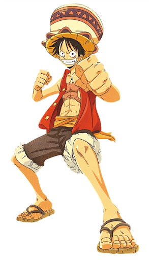
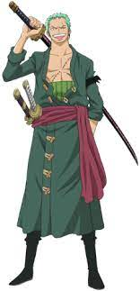

| Photo | Name | Biography |
|---|---|---|
|  | Monkey D. Luffy | Monkey D. Luffy is the main character of the Japanese manga ONE PIECE, created by Eiichiro Oda. Nicknamed "Straw hat boy", when he was a child, he accidentally ate the demon fruit Superman "rubber fruit". |
|  | Roronoa Zoro | Roronoa Zoro is a fictional character in the manga series The Nautical King, created by Japanese cartoonist Eiichiro Oda. He is the first partner of the main character Luffy and the second in command and combatant of the Straw Hat Thieves. |